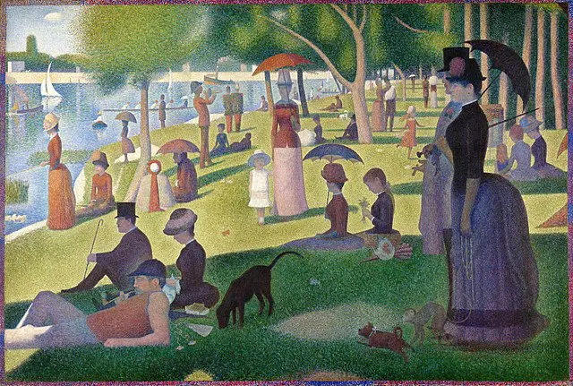

点描主义
点描主义是一种采用小点来构成图像的绘画技术，19世纪末由乔治·修拉和保罗·西涅克发展。这种技术强调颜色的光学混合，而不是在调色板上预混。点描主义作品通常由成千上万个小点组成，从远处观看时形成完整的图像。
艺术家介绍
席涅克
点描派：席涅克 Paul Signac 1863 ~ 1935 French
生于巴黎 1863 年十一月，死于 1935 年八月，法国新印象主义画家，与 Seurat 共同建立点描画法。 他主要画风景，且经常使用点彩派技法作画。 早年学建筑，后转而学绘画。 1884年与Seurat交往后，开始接受新印象主义理论，并成为这一运动的骨干人物。
作品富于激情，善用红色作为基调，色彩鲜明和谐，使远近产生秩序感。 晚年思想进步，同情社会主义和俄国十月革命。
秀拉
印象派的终结者：秀拉 Georges Seurat 1859 ~ 1891 French
秀拉是法国印象派中点描派的代表画家，后期印象派的重要人物，画作风格相当与众不同，擅长画都市中的风景画，也擅长将色彩理论套用到画作当中。 秀拉以在学所学之理论，运用于绘画上。 他把映入我们眼中的光色，分成几种基本的原色，在画面上用无数细小的色点把它表现出来（犹如电脑像素影像的先驱），因而被后人称为点描派。 同样是分析色彩的小笔触，新印象派比印象派更加细密，更具装饰风。
作品赏析
La Grande Jatte岛上的星期天 – Georges Seurat
修拉最伟大的杰作之一，也是许多评论家和历史学家认为是这一时期最著名的作品之一的画作，被称为 La Grande Jatte 岛上的星期日。 这幅画于 1886 年完成，众所周知，修拉在完全完成之前花了将近两年的时间创作这幅画。 作品的主题是对 19 世纪中后期法国社会生活和休闲的一瞥。它描绘了人们在美好的一天在塞纳河畔闲逛
威尼斯大运河入口 – Paul Signac
西涅克在1905年创作了一件作品，许多评论家认为这是点彩画运动中最伟大的作品。这幅画的标题是《威尼斯大运河的入口》，是这一时期这座城市的标志性代表。 Signac 独特的绘画风格巧妙地突出了水的颜色，以及太阳的光线照亮了水边的建筑物和船只。
农场里的孩子——卡米尔·毕沙罗
毕沙罗经常创作以许多法国人生活的简单本质为中心的作品。他最著名的作品之一是《农场里的孩子》，于 1887 年完成。 这幅画描绘了一个年轻的男孩和女孩，展示了毕沙罗在作品中描绘太阳光的杰出能力。毕沙罗被公认为最有才华的点彩画家之一，尽管他只创作了少量这种特殊风格的作品。
塞纳河上的 L'Hirondelle 轮船——保罗·西涅克
保罗·西涅克（Paul Signac）最著名的另一幅点彩画被认为是该流派中最伟大的作品之一，其持续时间比近几个世纪兴起的大多数其他艺术运动要短得多。 众所周知，西涅克创作的作品描绘了风景和城市景观，代表了他在整个欧洲最喜欢的一些地点。 其中一件作品名为《塞纳河上的L'Hirondelle轮船》，于1901年完成。这幅画描绘了这条著名河流的独特视角，因为西涅克选择描绘这幅作品，就好像它通过河上另一艘船的眼睛看，直接看水道的长度。